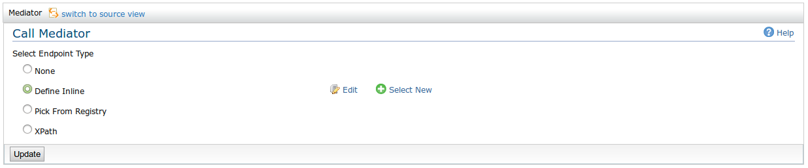

The Call mediator used to send messages out of ESB to some endpoint. Call Mediator invokes the service in an asynchronous manner and return without waiting for the response. Mediation will be paused from that point. When response is received, mediation flow resumes from the next mediator placed after the Call Mediator.
The behaviour is pretty much same as the Callout Mediator which performs a blocking external service invocation during mediation. Unlike in Callout mediator, Call mediator leverages the non-blocking transports so that Call mediator performs far better than the Callout mediator.
Figure 1: Call Mediator Options
You can select the endpoint to be one of the following value.